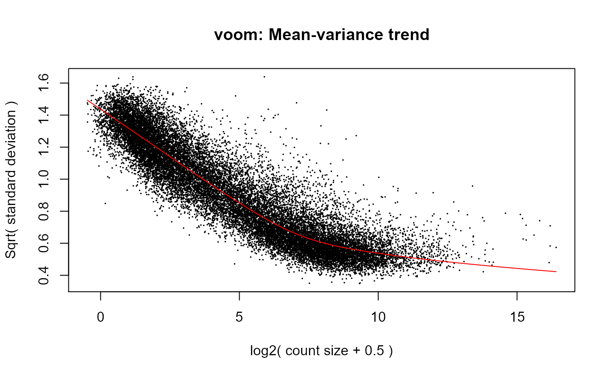

Read RNAseq counts
read_counts.RdRead tsv file with rnaseq counts into SummarizedExperiment
read_counts( file, fid_col = 1, fname_col = character(0), filter_features_min_count = 10, verbose = TRUE, plot = TRUE )
Arguments
| file | string: path to rnaseq counts file |
|---|---|
| fid_col | number of name of column with feature identifiers |
| fname_col | string or number: feature name variable |
| filter_features_min_count | number (default 10): filter out features
with less than 10 counts (in the smallest library) across samples. Filtering
performed with |
| verbose | TRUE (default) or FALSE |
| plot | TRUE (default) / FALSE |
Value
SummarizedExperiment
Details
File format: header row feature annotations in first few columns feature counts in next columns
See also
merge_sdata, merge_fdata
Examples
#>#>#>#>#>#>#>#>#>#>#> class: SummarizedExperiment #> dim: 21990 24 #> metadata(3): analysis file platform #> assays(3): counts exprs weights #> rownames(21990): ENSG00000000003.14 ENSG00000000005.5 ... #> ENSG00000283667.1 ENSG00000283674.1 #> rowData names(5): feature_id gene_id gene_name gene_type locus #> colnames(24): EM00_R1 EM00_R2 ... BM_R2 BM_R3 #> colData names(6): sample_id subgroup ... libsize.filtered #> libsize.scaled